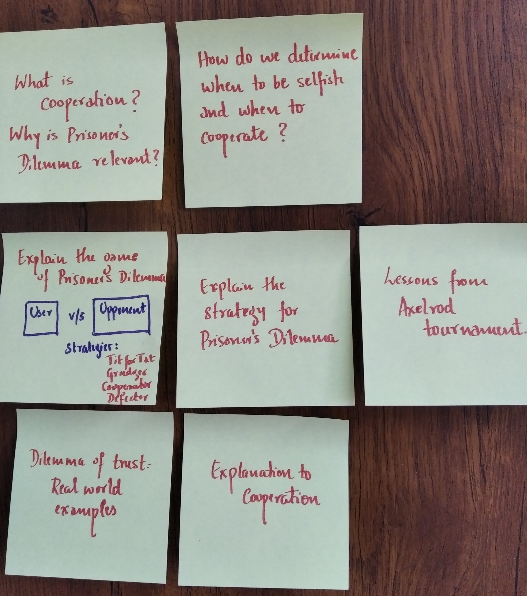

What a game of Prisoner's Dilemma teaches us about cooperation in human behaviour
October 2019
Cooperation is the process of groups of organisms working or acting together for common, mutual, or some underlying benefit, as opposed to working in competition for selfish benefit. Cooperation is when individual components that appear to be selfish and independent, work together to create a highly complex, greater-than-the-sum-of-its-parts system. Examples of such behaviour in our society includes those in market trade, military wars, families, workplaces, schools and more generally any institution or organization of which individuals are part.
Individual action on behalf of a larger system may be forced, freely chosen, or even unintentional, and consequently individuals and groups might act in concert even though they have almost nothing in common as regards interests or goals. But as humans, how exactly do we determine when to be selfish and when to cooperate ? Charles Darwin's theory of how evolution works (by means of Natural Selection) is explicitly competitive. The undoubted success of Darwin's theory strongly suggests an inherently antagonistic relationship between unrelated individuals. Yet cooperation is prevalent, seems beneficial, and even seems to be essential to human society.
This project aims to study the behaviour of human cooperation using the game of Prisoner's Dilemma, which is a standard example of a game analyzed in game theory that shows why two completely rational individuals might not cooperate, even if it appears that it is in their best interests to do so.

Parable of the Polygons: A playable post on the shape of society by Vi Hart and Nicky Case